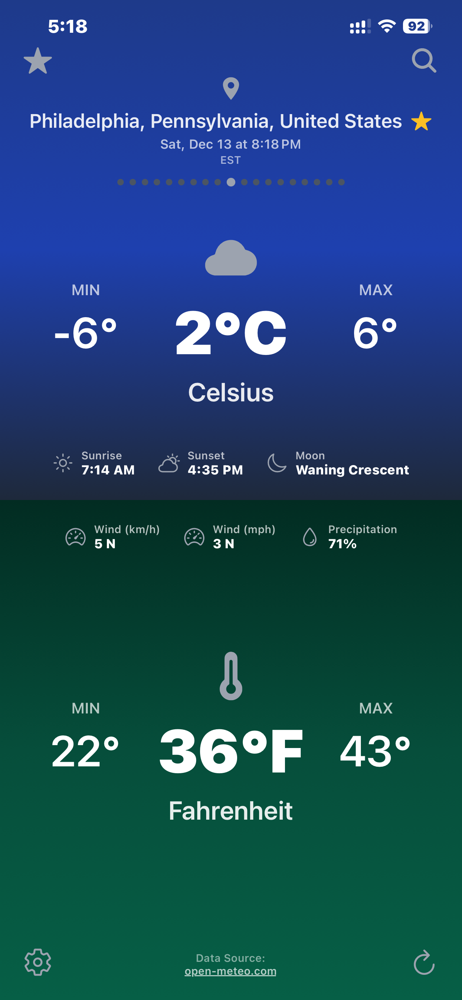
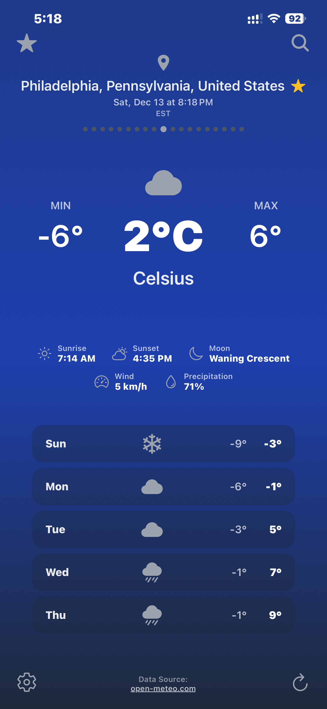
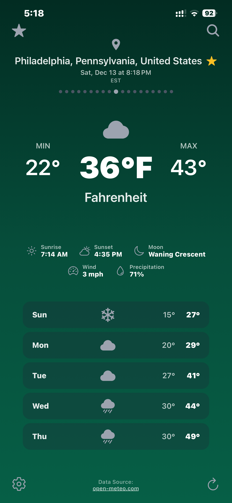
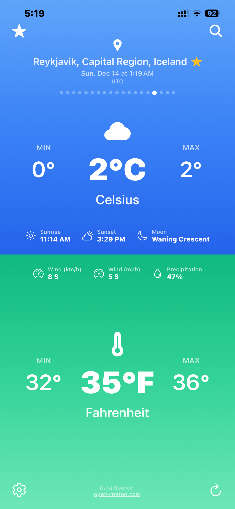
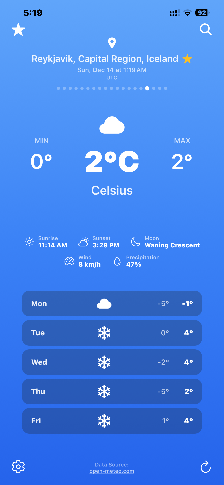
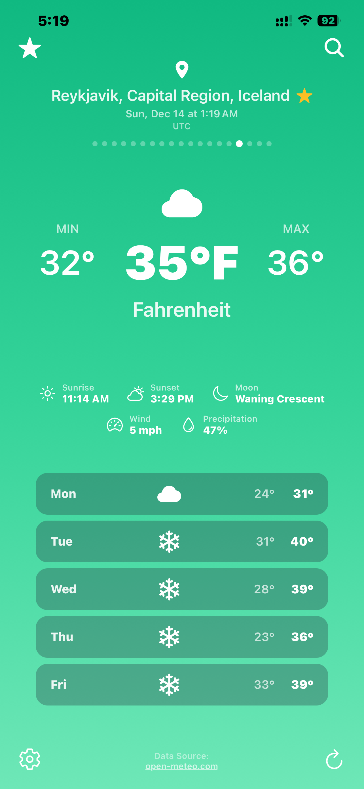
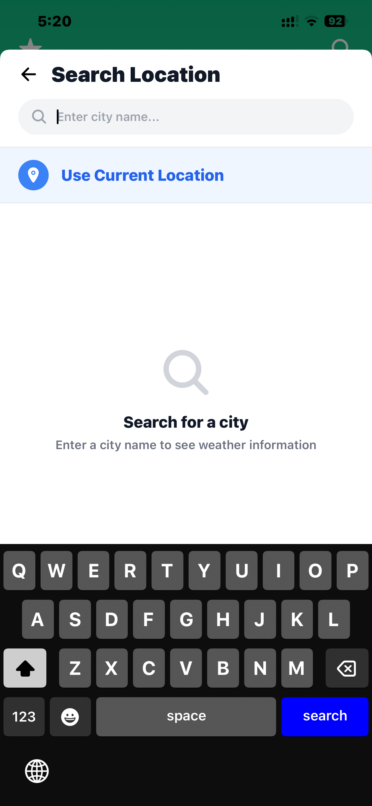

App Permissions
cfWeather requests permission to access your device's location in order to provide accurate local weather information. This permission is optional; you can always search for locations around the world.
It also needs to access the internet to retrieve weather data from third-party APIs.
Privacy Policy
Your privacy is important to us. cfWeather does not collect or store any personal data. All weather data is fetched directly from third-party APIs, and we do not track or log any user activity within the app.